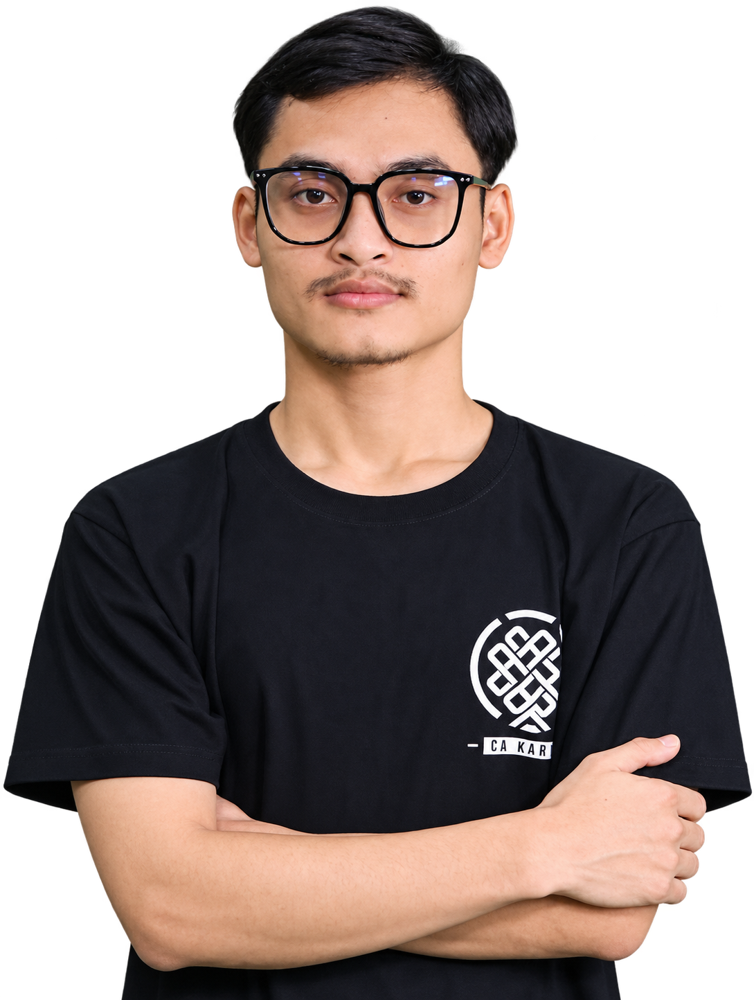
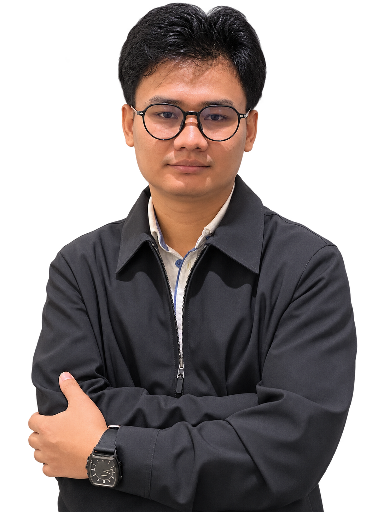

100% transparency
We aim to account for every baht by sharing what came in, what we spent, and what remains for the next run.
Our story
A friend and I started Fellowship Project around a simple idea. If each of us gives a little, together we can help cover the everyday essentials that families need.


We chose to focus on Mae Sot so we could keep the work local and practical. With one community as our focus, we can listen to what people need, buy useful supplies, and share a clearer account of what each food run provides.
Our focus is on people who need help putting food on the table. We start with familiar basics like rice and cooking oil.
What guides us
We aim to account for every baht by sharing what came in, what we spent, and what remains for the next run.
We respect each person’s privacy and ask before sharing identifiable photos or stories. Receiving help never depends on being photographed.
We listen first and focus on everyday supplies people can use.